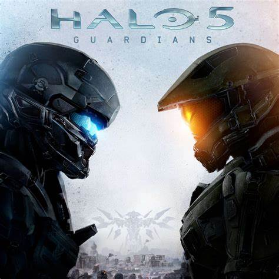
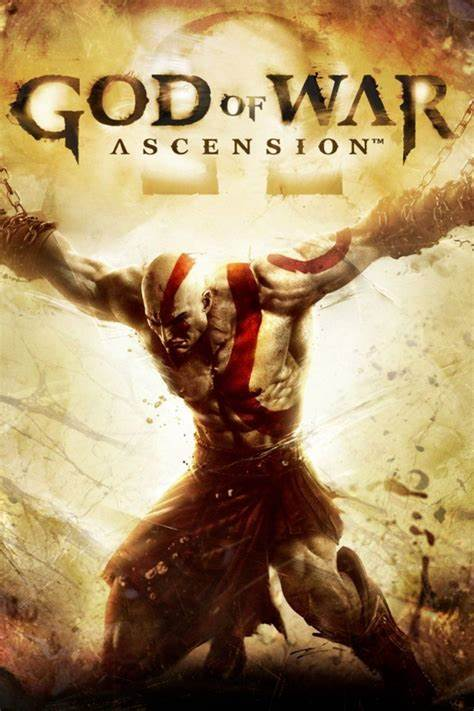
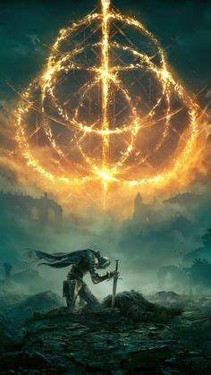

Halo 5 Guardians
Plataformas: Xbox One
Género: Acción
Un juego de acción y aventura en un mundo post-apocalíptico.
Más informaciónValoración: ★★★★
Recomendado para: Fans de los shooters en primera persona y seguidores de la saga Halo.
God of War - Ascension
Plataformas: PC, Xbox One
Género: Acción
Un juego de acción basado en la mitología nórdica.
Más informaciónValoración: ★★★★★
Recomendado para: Fans de los juegos de acción, mitología y seguidores de la saga God of War.
Elden Ring
Plataformas: PC, Xbox One, Xbox Series
Género: Acción
Una aventura de acción y rol en un mundo abierto.
Más informaciónValoración: ★★★★★
Recomendado para: Fans de los juegos de rol, acción desafiante y mundos abiertos con exploración profunda.